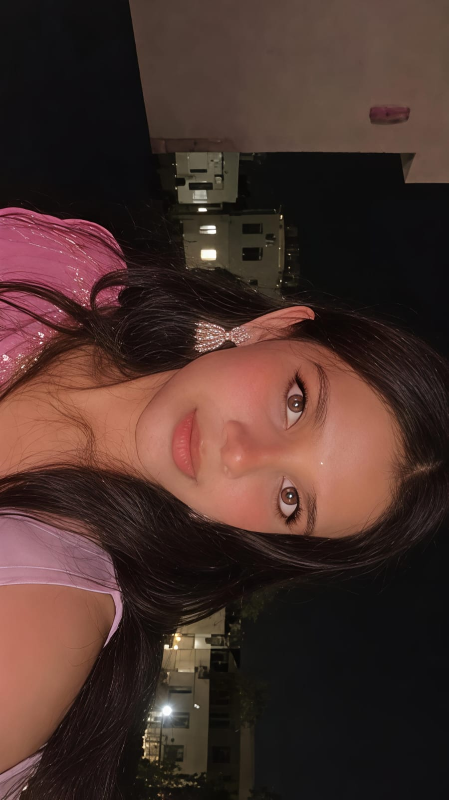

a tiny thing, just for you
Puranpoli, one thing about this photo…
I was going to just say “nice picture” but that felt like a criminal waste of a perfectly good observation.

that little almost-smile ✦
That almost-smile? It looks like you know a joke you haven't told us yet.
Your eyes have that slightly off-camera look, like something nearby just caught your attention.
The sparkly earring catching the flash is such a small detail, but it makes the whole picture.
And the pink with lilac? Very good call. The colours feel so you.
Your hair just falling around the frame makes this feel more like a real moment than a planned photo.
Even with the night sky and building lights behind you, the photo feels calm. Quite a talent, honestly.